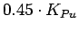
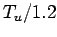
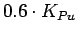

Next: About this document ... Up: FlightGear Autopilot: Theory, Configuration, Previous: XML Autopilot Config File
The first two theory and algorithm sections are there for people who want a bit of a deeper understanding of control theory and our particular PID implementation. The xml and tuning sections are for people that just want to make the autopilot work. The good news is that you can make workable autopilots without needing to understand the theory.
I would recommend that aircraft designers start by copying the autopilot configuration file from an existing similar aircraft. In many cases you are done. However, if there is no existing similar aircraft, or something doesn't work stably for you, you will most likely need to tune your autopilot modules.
The most basic method of tuning is the trial and error method. This method involves adjusting the proportional gain, the integral time and the derivative time until the performance is satisfactory. The three settings are often adjusted separately in order to see the effects of the different settings. This process can be time consuming.
It can be difficult to get started using the trial end error method. What kind of gains and times should one start out with? A typical approach for tuning a PID controller can be summarized as follows:
The proportional gain that results in continuous cycling in Step 3 is called the ultimate gain. In performing the experimental test to find the ultimate gain, it is important that the output does not saturate. If saturation occurs it is possible to get continuous cycling even though the gain is higher than the ultimate gain. This would then result in a too high gain in Step 4.
Disadvantages of the trial and error method include:
The Ziegler-Nichols methods of controller tuning are the "closed loop" and the "open loop" method. The closed loop method is quite similar to the trial and error method:
Steps 1-3 are the same as in the trial and error method.
Step 4. Take note of the ultimate gain  , and the ultimate
period
, and the ultimate
period  . The ultimate period is the period of the oscillations.
. The ultimate period is the period of the oscillations.
Step 5. Calculate controller settings according to this table:
| Controller | |||
| P |
|
inf. | 0 |
| PI |  |  | 0 |
| PID |  |
For more info on tuning and PID control systems follow this link:
http://www.jashaw.com/pid
There is a slightly roundabout method for tweaking these parameters inside of FlightGear without needed to quit and restart.
/autopilot/new-config/. There you will find an entry for
each PID controller. They are numbered starting with zero and
correspond to the order specified in your autopilot.xml
config file.
Reconfig Autopilot from the Autopilot menu.
Reconfig Autopilot.
Curtis L. Olson 2004-02-02